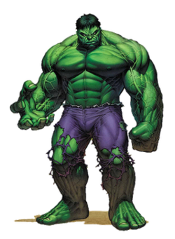

The Hulk is a fictional superhero appearing in publications by the American publisher Marvel Comics.

Created by writer Stan Lee and artist Jack Kirby, the character first appeared in the debut issue of The Incredible Hulk (May 1962). In his comic book appearances, the character is both the Hulk, a green-skinned, hulking and muscular humanoid possessing a vast degree of physical strength, and his alter ego Dr. Robert Bruce Banner, a physically weak, socially withdrawn, and emotionally reserved physicist. The two exist as independent dissociative personalities, and resent each other.